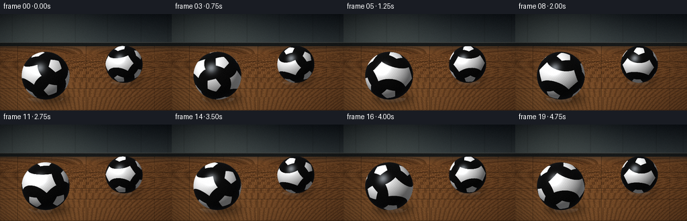
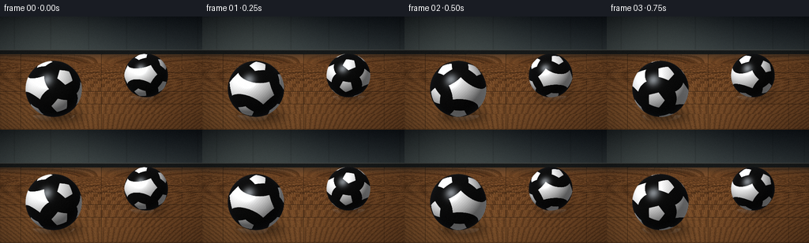

CODING AGENTS AS PIXEL WORLD MODELS
traex/DeepSeek-V4.1-Flash · instance_preservation_0027
点击播放 · 原生 RGB 像素
逐轮保存的候选
回放视频、检查图与代码变化。
每份候选均可单独播放。实际图片检查记录在下方工具轨迹中。
候选 01播放与检查图
点击播放 · 原生 RGB 像素


展开代码变化
--- 上一保存版本
+++ 本次保存版本
@@ -0,0 +1,321 @@
+import math
+from pathlib import Path
+
+import numpy as np
+from PIL import Image, ImageDraw, ImageFilter
+
+import artifact_io
+
+
+WIDTH = 256
+HEIGHT = 144
+FPS = 4
+FRAME_COUNT = 20
+SS = 2
+
+
+def normalize(v):
+ v = np.asarray(v, dtype=np.float64)
+ return v / np.linalg.norm(v)
+
+
+def smoothstep(edge0, edge1, value):
+ t = np.clip((value - edge0) / (edge1 - edge0), 0.0, 1.0)
+ return t * t * (3.0 - 2.0 * t)
+
+
+def rodrigues(axis, angle):
+ axis = normalize(axis)
+ x, y, z = axis
+ c = math.cos(angle)
+ s = math.sin(angle)
+ one_c = 1.0 - c
+ return np.array(
+ [
+ [c + x * x * one_c, x * y * one_c - z * s, x * z * one_c + y * s],
+ [y * x * one_c + z * s, c + y * y * one_c, y * z * one_c - x * s],
+ [z * x * one_c - y * s, z * y * one_c + x * s, c + z * z * one_c],
+ ],
+ dtype=np.float64,
+ )
+
+
+def icosahedron_vertices():
+ phi = (1.0 + math.sqrt(5.0)) / 2.0
+ vertices = []
+ for a, b in ((0.0, 1.0), (0.0, -1.0), (1.0, 0.0), (-1.0, 0.0)):
+ if a == 0.0:
+ vertices.extend([(a, b, phi), (a, b, -phi)])
+ else:
+ vertices.extend([(a, phi, b), (a, -phi, b)])
+ return np.asarray([normalize(v) for v in vertices], dtype=np.float64)
+
+
+def make_soccer_texture(texture_w=1024, texture_h=512):
+ lon = (np.arange(texture_w, dtype=np.float64) + 0.5) / texture_w * (2.0 * math.pi) - math.pi
+ lat = (0.5 - (np.arange(texture_h, dtype=np.float64) + 0.5) / texture_h) * math.pi
+ lon_grid, lat_grid = np.meshgrid(lon, lat)
+ q = np.stack(
+ [
+ np.cos(lat_grid) * np.sin(lon_grid),
+ np.sin(lat_grid),
+ np.cos(lat_grid) * np.cos(lon_grid),
+ ],
+ axis=-1,
+ ).reshape(-1, 3)
+
+ black_coverage = np.zeros(q.shape[0], dtype=np.float64)
+ seam_coverage = np.zeros(q.shape[0], dtype=np.float64)
+ pentagon_radius = math.radians(18.2)
+ tangent_radius = math.tan(pentagon_radius)
+ apothem = tangent_radius * math.cos(math.pi / 5.0)
+ seam_width = 0.0042
+ antialias = 0.0018
+ up = np.array([0.0, 1.0, 0.0], dtype=np.float64)
+
+ for index, center in enumerate(icosahedron_vertices()):
+ tangent = np.cross(up, center)
+ if np.linalg.norm(tangent) < 1e-5:
+ tangent = np.array([1.0, 0.0, 0.0])
+ e1 = normalize(tangent)
+ e2 = np.cross(center, e1)
+ center_depth = q @ center
+ valid = center_depth > 0.72
+ safe_depth = np.where(valid, center_depth, 1.0)
+ px = (q @ e1) / safe_depth
+ py = (q @ e2) / safe_depth
+
+ phase = (index % 5) * (math.pi / 5.0)
+ max_edge = np.full(q.shape[0], -1e9, dtype=np.float64)
+ for k in range(5):
+ theta = phase + math.pi / 2.0 + (k + 0.5) * (2.0 * math.pi / 5.0)
+ max_edge = np.maximum(max_edge, px * math.cos(theta) + py * math.sin(theta))
+ signed = apothem - max_edge
+ inside = (1.0 - smoothstep(-antialias, antialias, signed)) * valid
+ seam = (1.0 - smoothstep(seam_width, seam_width + antialias, np.abs(signed))) * valid
+ black_coverage = np.maximum(black_coverage, inside)
+ seam_coverage = np.maximum(seam_coverage, seam)
+
+ fine = (
+ 0.012 * np.sin(lon_grid * 81.0 + lat_grid * 37.0)
+ + 0.008 * np.sin(lon_grid * 173.0 - lat_grid * 59.0)
+ + 0.006 * np.sin(lon_grid * 317.0 + lat_grid * 111.0)
+ ).reshape(-1, 1)
+ white = np.clip(0.92 + fine, 0.0, 1.0)
+ seam_color = np.full_like(white, 0.33)
+ black = np.full_like(white, 0.045)
+ color = white * (1.0 - 0.66 * seam_coverage[:, None]) + seam_color * (0.66 * seam_coverage[:, None])
+ color = color * (1.0 - black_coverage[:, None]) + black * black_coverage[:, None]
+ rgb = np.repeat(color, 3, axis=1).reshape(texture_h, texture_w, 3)
+ return np.clip(rgb, 0.0, 1.0).astype(np.float32)
+
+
+def sample_texture(texture, q):
+ texture_h, texture_w = texture.shape[:2]
+ lon = np.arctan2(q[..., 0], q[..., 2])
+ lat = np.arcsin(np.clip(q[..., 1], -1.0, 1.0))
+ u = (lon / (2.0 * math.pi) + 0.5) * texture_w - 0.5
+ v = (0.5 - lat / math.pi) * texture_h - 0.5
+ x0 = np.floor(u).astype(np.int32)
+ y0 = np.floor(v).astype(np.int32)
+ fx = u - x0
+ fy = v - y0
+ x1 = (x0 + 1) % texture_w
+ y1 = np.clip(y0 + 1, 0, texture_h - 1)
+ x0 = x0 % texture_w
+ y0 = np.clip(y0, 0, texture_h - 1)
+ c00 = texture[y0, x0]
+ c10 = texture[y0, x1]
+ c01 = texture[y1, x0]
+ c11 = texture[y1, x1]
+ fx = fx[..., None]
+ fy = fy[..., None]
+ top = c00 * (1.0 - fx) + c10 * fx
+ bottom = c01 * (1.0 - fx) + c11 * fx
+ return top * (1.0 - fy) + bottom * fy
+
+
+def make_background():
+ h = HEIGHT * SS
+ w = WIDTH * SS
+ horizon = 47 * SS
+ yy, xx = np.mgrid[0:h, 0:w]
+ y = yy / SS
+ x = xx / SS
+
+ wall_top = np.array([0.055, 0.075, 0.095])
+ wall_bottom = np.array([0.19, 0.22, 0.23])
+ t = np.clip(y / 47.0, 0.0, 1.0)[..., None]
+ image = wall_top * (1.0 - t) + wall_bottom * t
+
+ glow = np.exp(-(((x - 60.0) / 95.0) ** 2 + ((y - 19.0) / 56.0) ** 2))
+ image += glow[..., None] * np.array([0.10, 0.105, 0.09])
+ for panel_x in (18.0, 64.0, 112.0, 160.0, 210.0, 250.0):
+ panel = np.exp(-((x - panel_x) / 0.75) ** 2)
+ image *= (1.0 - 0.12 * panel[..., None])
+
+ floor_mask = yy >= horizon
+ depth = np.maximum((yy - horizon) / SS, 0.25) / 300.0
+ xworld = (xx - w / 2.0) / SS * depth
+ zworld = 1.05 / np.maximum(depth, 0.04)
+
+ plank_w = 0.17
+ plank_l = 0.82
+ plank_id = np.floor(xworld / plank_w)
+ segment_id = np.floor(zworld / plank_l)
+ hash_value = np.mod(plank_id * 17.0 + segment_id * 31.0, 11.0) / 11.0
+ palette = np.array(
+ [
+ [0.42, 0.255, 0.125],
+ [0.49, 0.305, 0.155],
+ [0.36, 0.215, 0.105],
+ [0.52, 0.33, 0.18],
+ [0.45, 0.275, 0.14],
+ [0.39, 0.235, 0.12],
+ ]
+ )
+ plank_color = palette[np.floor(hash_value * len(palette)).astype(np.int32) % len(palette)]
+ grain = (
+ 0.050 * np.sin(zworld * 39.0 + xworld * 16.0 + hash_value * 11.0)
+ + 0.026 * np.sin(zworld * 111.0 - xworld * 29.0)
+ + 0.015 * np.sin(zworld * 251.0 + xworld * 83.0)
+ )
+ floor_color = plank_color * (0.86 + 0.13 * hash_value[..., None] + grain[..., None])
+
+ u = np.mod(xworld / plank_w, 1.0)
+ v = np.mod(zworld / plank_l, 1.0)
+ seam = np.maximum(u < 0.018, v < 0.009)
+ floor_color[seam] *= 0.47
+
+ light = np.exp(-(((x - 64.0) / 95.0) ** 2 + ((y - 132.0) / 45.0) ** 2))
+ floor_color += light[..., None] * np.array([0.085, 0.067, 0.040])
+ fog = np.exp(-((y - 47.0) / 6.0) ** 2)[..., None]
+ floor_color = floor_color * (1.0 - 0.42 * fog) + np.array([0.14, 0.145, 0.14]) * (0.42 * fog)
+ image[floor_mask] = floor_color[floor_mask]
+
+ baseboard = (yy >= horizon - 4 * SS) & (yy < horizon + 1 * SS)
+ image[baseboard] = np.array([0.09, 0.10, 0.10])
+ trim = (yy >= horizon - 5 * SS) & (yy < horizon - 4 * SS)
+ image[trim] = np.array([0.26, 0.27, 0.26])
+
+ vignette = np.clip(1.0 - 0.34 * (((x - 128.0) / 176.0) ** 2 + ((y - 74.0) / 110.0) ** 2), 0.66, 1.0)
+ image *= vignette[..., None]
+ return np.clip(image, 0.0, 1.0).astype(np.float32)
+
+
+def add_shadows(base):
+ h = HEIGHT * SS
+ w = WIDTH * SS
+ shadow = Image.new("L", (w, h), 0)
+ draw = ImageDraw.Draw(shadow)
+ for cx, cy, radius, strength in ((68, 94, 36, 128), (185, 75, 28, 94)):
+ x = (cx + radius * 0.20) * SS
+ y = (cy + radius * 0.90) * SS
+ rx = radius * 0.84 * SS
+ ry = radius * 0.27 * SS
+ draw.ellipse((x - rx, y - ry, x + rx, y + ry), fill=strength)
+ shadow = shadow.filter(ImageFilter.GaussianBlur(radius=5.2 * SS))
+ shadow_array = np.asarray(shadow, dtype=np.float32)[..., None] / 255.0
+ tinted = base * (1.0 - 0.68 * shadow_array)
+ return np.clip(tinted, 0.0, 1.0)
+
+
+def render_ball(base, center, radius, rotation, texture):
+ h, w = base.shape[:2]
+ cx = center[0] * SS
+ cy = center[1] * SS
+ r = radius * SS
+ x0 = max(0, int(math.floor(cx - r - 2)))
+ x1 = min(w, int(math.ceil(cx + r + 2)))
+ y0 = max(0, int(math.floor(cy - r - 2)))
+ y1 = min(h, int(math.ceil(cy + r + 2)))
+ yy, xx = np.mgrid[y0:y1, x0:x1]
+ nx = (xx + 0.5 - cx) / r
+ ny = (yy + 0.5 - cy) / r
+ rr = nx * nx + ny * ny
+ mask = rr <= 1.0
+ nz = np.sqrt(np.maximum(1.0 - rr, 0.0))
+ normals = np.stack([nx, ny, nz], axis=-1)
+ body = normals @ rotation
+ tex = sample_texture(texture, body)
+
+ light = normalize([-0.46, -0.58, 0.68])
+ diffuse = np.clip(normals @ light, 0.0, 1.0)
+ half_vector = normalize(light + np.array([0.0, 0.0, 1.0]))
+ specular = np.power(np.clip(normals @ half_vector, 0.0, 1.0), 42.0)
+ fresnel = np.power(1.0 - np.clip(nz, 0.0, 1.0), 2.5)
+ lower_ao = np.clip(1.0 - 0.13 * np.clip(ny, 0.0, 1.0), 0.82, 1.0)
+ shaded = tex * (0.40 + 0.76 * diffuse[..., None]) * lower_ao[..., None]
+ shaded += specular[..., None] * np.array([0.46, 0.48, 0.50])
+ shaded += fresnel[..., None] * np.array([0.050, 0.060, 0.075])
+
+ edge_distance = (1.0 - np.sqrt(np.minimum(rr, 1.0))) * r
+ alpha = np.clip(edge_distance / 1.35, 0.0, 1.0) * mask
+ region = base[y0:y1, x0:x1]
+ region[:] = region * (1.0 - alpha[..., None]) + np.clip(shaded, 0.0, 1.0) * alpha[..., None]
+
+
+def add_floor_reflection(base, center, radius, rotation, texture):
+ h, w = base.shape[:2]
+ cx = center[0] * SS
+ contact_y = (center[1] + radius * 0.92) * SS
+ r = radius * SS
+ reflection = np.zeros_like(base)
+ reflection_img = Image.fromarray(np.zeros((h, w, 3), dtype=np.uint8))
+ _ = reflection_img
+ yy, xx = np.mgrid[0:h, 0:w]
+ rx = (xx - cx) / (r * 0.74)
+ ry = (yy - contact_y) / (r * 0.22)
+ rr = rx * rx + ry * ry
+ mask = (rr <= 1.0) & (yy >= contact_y)
+ if not np.any(mask):
+ return
+ nz = np.sqrt(np.maximum(1.0 - np.minimum(rr, 1.0), 0.0))
+ nx = np.clip(rx, -1.0, 1.0)
+ normals = np.stack([nx, np.zeros_like(nx), nz], axis=-1)
+ body = normals @ rotation
+ tex = sample_texture(texture, body)
+ fade = np.clip(1.0 - (yy - contact_y) / (r * 0.24), 0.0, 1.0) * 0.12
+ fade *= mask
+ base[:] = base * (1.0 - fade[..., None]) + tex * fade[..., None]
+
+
+def build_frames():
+ texture = make_soccer_texture()
+ background = make_background()
+ shadowed = add_shadows(background)
+ frames = []
+ balls = (
+ {"center": (68.0, 92.0), "radius": 36.0, "axis": (-0.10, 0.99, 0.05), "speed": 0.58, "phase": 0.4},
+ {"center": (185.0, 75.0), "radius": 28.0, "axis": (0.12, 0.99, -0.06), "speed": -0.72, "phase": 1.1},
+ )
+
+ for frame_index in range(FRAME_COUNT):
+ time = frame_index / FPS
+ image = shadowed.copy()
+ rotations = []
+ for ball in balls:
+ angle = ball["phase"] + 2.0 * math.pi * ball["speed"] * time
+ tilt = rodrigues((0.0, 0.0, 1.0), math.radians(8.0))
+ rotation = tilt @ rodrigues(ball["axis"], angle)
+ rotations.append(rotation)
+ add_floor_reflection(image, ball["center"], ball["radius"], rotation, texture)
+
+ for ball, rotation in zip(balls, rotations):
+ render_ball(image, ball["center"], ball["radius"], rotation, texture)
+
+ fine_grain = np.random.default_rng(100 + frame_index).normal(0.0, 0.006, (HEIGHT * SS, WIDTH * SS, 1))
+ image = np.clip(image + fine_grain.astype(np.float32), 0.0, 1.0)
+ frame = Image.fromarray((image * 255.0 + 0.5).astype(np.uint8), mode="RGB")
+ frame = frame.resize((WIDTH, HEIGHT), Image.Resampling.LANCZOS)
+ frames.append(np.asarray(frame, dtype=np.uint8))
+ return np.stack(frames)
+
+
+def main():
+ frames = build_frames()
+ artifact_io.save(frames, Path(__file__).resolve().parent)
+
+
+if __name__ == "__main__":
+ main()
候选 02播放与检查图
点击播放 · 原生 RGB 像素

展开代码变化
--- 上一保存版本
+++ 本次保存版本
@@ -306,7 +306,7 @@
fine_grain = np.random.default_rng(100 + frame_index).normal(0.0, 0.006, (HEIGHT * SS, WIDTH * SS, 1))
image = np.clip(image + fine_grain.astype(np.float32), 0.0, 1.0)
- frame = Image.fromarray((image * 255.0 + 0.5).astype(np.uint8), mode="RGB")
+ frame = Image.fromarray((image * 255.0 + 0.5).astype(np.uint8))
frame = frame.resize((WIDTH, HEIGHT), Image.Resampling.LANCZOS)
frames.append(np.asarray(frame, dtype=np.uint8))
return np.stack(frames)
可观测工具轨迹
实际执行的命令与返回图片。
命令 1exit 0
/bin/bash -c "pwd && rg --files -g 'prompt.txt' -g 'GENERATION_RULES.md' -g 'task_spec.json' -g '"'!*.mp4'"'"
命令 2exit 0
/bin/bash -c 'ls -la'
命令 3exit 0
/bin/bash -c 'cat prompt.txt'
命令 4exit 0
/bin/bash -c 'cat GENERATION_RULES.md'
命令 5exit 0
/bin/bash -c 'cat task_spec.json'
命令 6exit 0
/bin/bash -c "sed -n '1,240p' artifact_io.py"
命令 7exit 0
/bin/bash -c 'python generate.py'
命令 8exit 0
/bin/bash -c "python - <<'PY'
from pathlib import Path
import json
import numpy as np
from PIL import Image
p=Path('.')
frames=np.stack([np.asarray(Image.open(f),dtype=np.uint8) for f in sorted((p/'frames').glob('*.png'))])
print('frames', frames.shape, 'fps', json.loads((p/'task_spec.json').read_text())['fps'])
print('pixel range', int(frames.min()), int(frames.max()), 'mean', round(float(frames.mean()),2))
print('unique colors/frame', len(np.unique(frames[0].reshape(-1,3),axis=0)))
print('changed pixels consecutive', [int(np.any(frames[i]"'!=frames[i-1],axis=2).sum()) for i in range(1,len(frames))])
print('"'artifact files', sorted(x.name for x in p.iterdir() if x.is_file()))
PY"命令 9exit 0
/bin/bash -c "python - <<'PY'
from pathlib import Path
import json
p=Path('index.html')
s=p.read_text()
print('html bytes', len(s), 'has payload', '__DATA__' not in s, 'id', json.loads((Path('task_spec.json')).read_text()))
print('npz bytes', (Path('pixels.npz')).stat().st_size)
PY"命令 10exit 1
/bin/bash -c 'command -v ffmpeg && ffmpeg -version | head -n 1'
命令 11exit 0
/bin/bash -c "python generate.py && python - <<'PY'
from pathlib import Path
import json
import numpy as np
from PIL import Image
spec=json.loads(Path('task_spec.json').read_text())
frames=np.stack([np.asarray(Image.open(p), dtype=np.uint8) for p in sorted(Path('frames').glob('*.png'))])
expected=(spec['frames'], spec['height'], spec['width'], 3)
assert frames.shape == expected, (frames.shape, expected)
assert frames.dtype == np.uint8
assert np.any(frames[0] "'!= frames[-1])
assert len(list(Path('"'frames').glob('*.png'))) == spec['frames']
assert Path('pixels.npz').is_file() and Path('index.html').is_file()
print('PASS', frames.shape, f\"fps={spec['fps']}\", f\"mean={frames.mean():.2f}\")
PY"视觉工具实际返回图片 1

视觉工具实际返回图片 2

保存候选 2 份；完成命令 11 次；可验证图片返回 2 张。原始 API 响应与完整日志保留在本地。